Aiming
Selection
패널을 걷어 내고, 세계 위에 필요한 조작과 상태만 남기는 전 화면 공유 시스템.
조준 HUD는 수직 0–100 점수축으로 통일하고 세 가지 배치 중 하나를 선택한다. 공 목록은 hover·키보드 focus·터치 선택에서 같은 설명을 보여 준다.
01 · System
장식용 컨테이너를 없애고, 같은 아이콘 그리드·간격·상태 규칙을 모든 화면에 재사용한다.
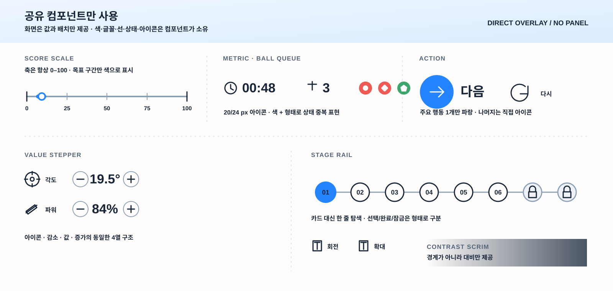
0–100
조준·지도·비행 추적은 수직 계기를 사용한다. 브리핑·결과는 같은 ScoreScale의 가로 preset을 유지한다.
02 · References
실제 게임 UI에서 화면 점유와 정보 표현 원칙만 추출했다. 레이아웃·아트는 복제하지 않는다.
03 · Screens
TO-BE는 최신 실행 캡처를 기반으로 한 구성 목표다. 월드와 카메라는 구현 기준을 유지하고 UI만 교체한다.
조준 · 3안
수직 점수축 · 설명 가능한 공 목록 · 같은 공유 컴포넌트
탭을 누르면 선택이 이 브라우저에 저장됩니다.
현재 선택: C · 대포 중심
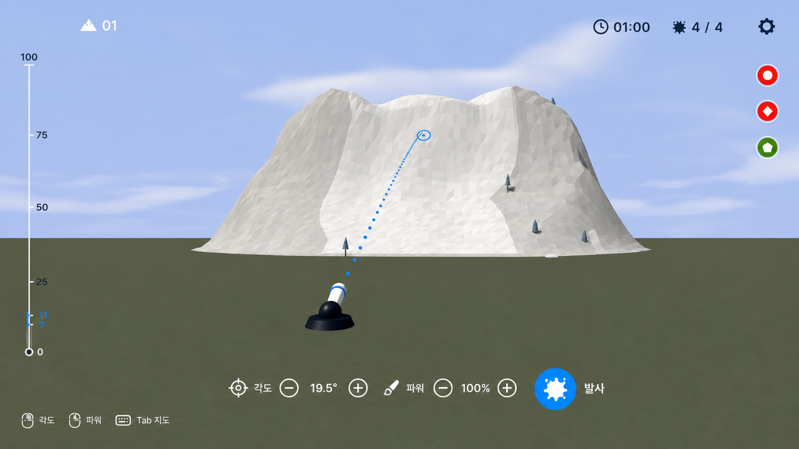
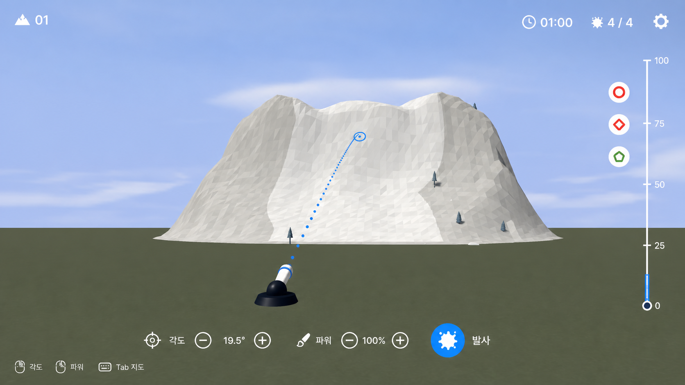
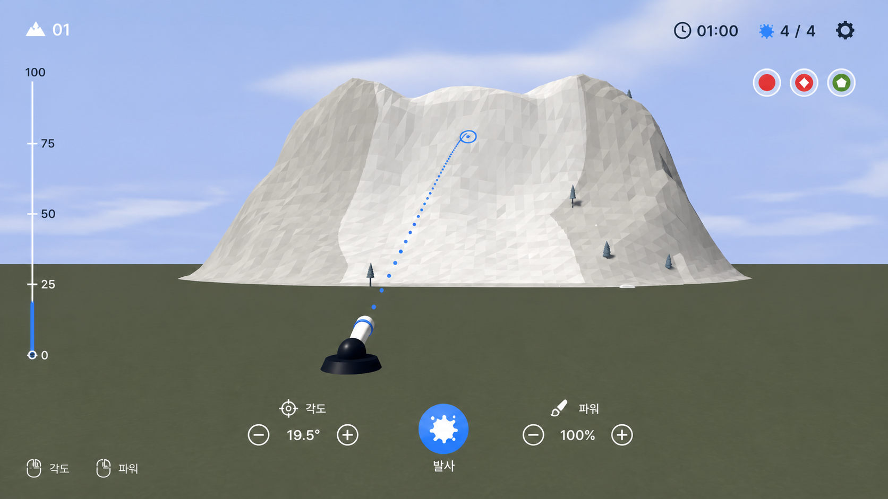
현재 조준 화면 보기
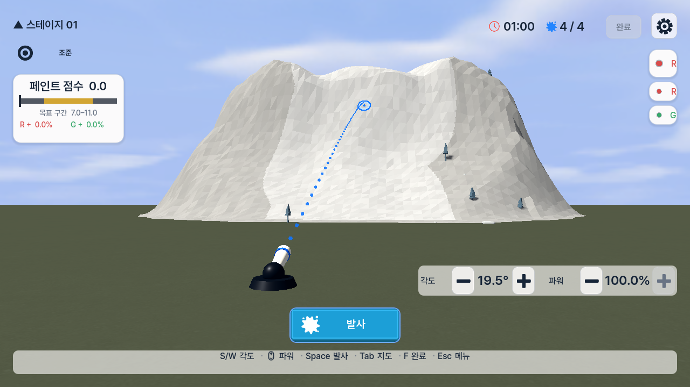
스테이지 선택
산 · 8개 노드 · 시작
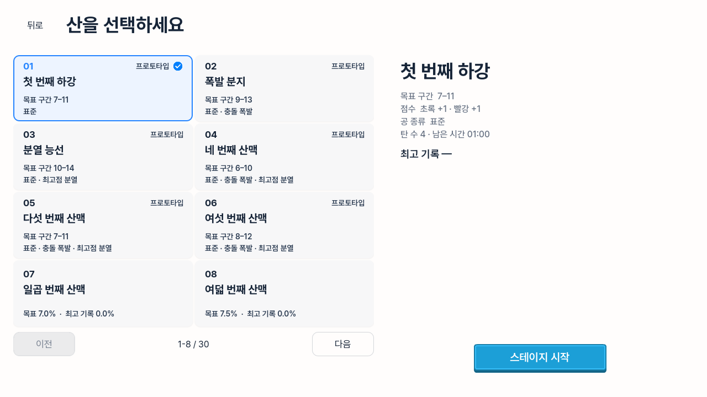
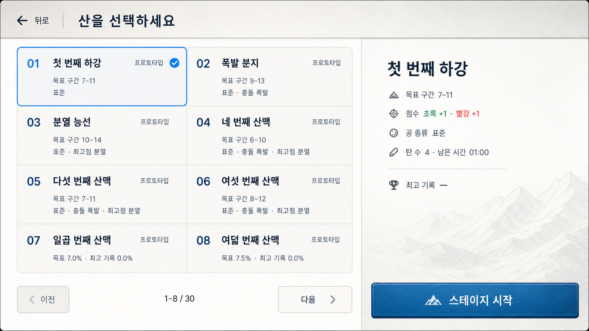
브리핑
번호 · 목표 · 공 순서 · 시작
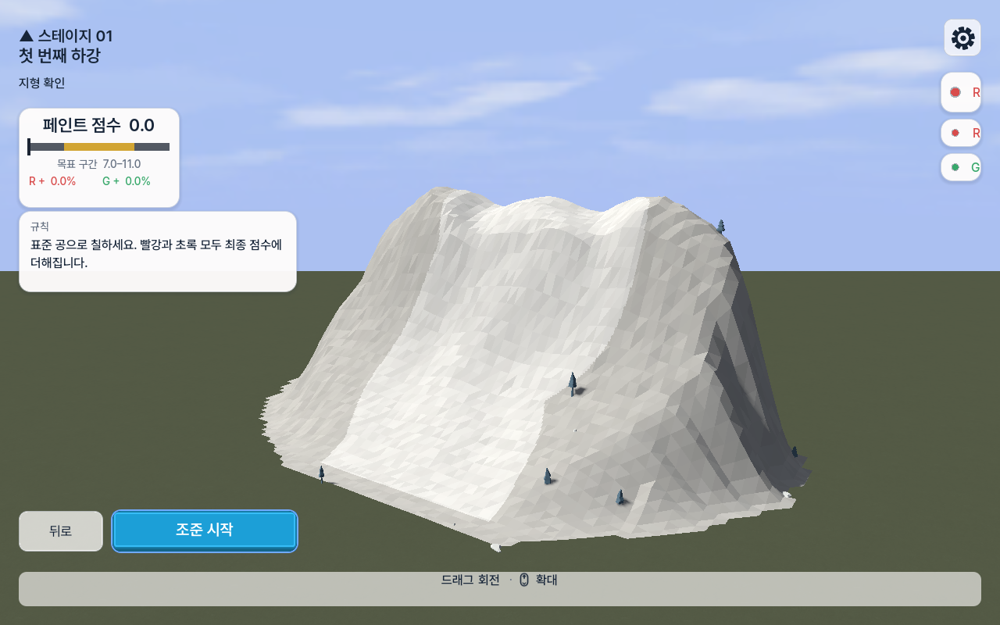
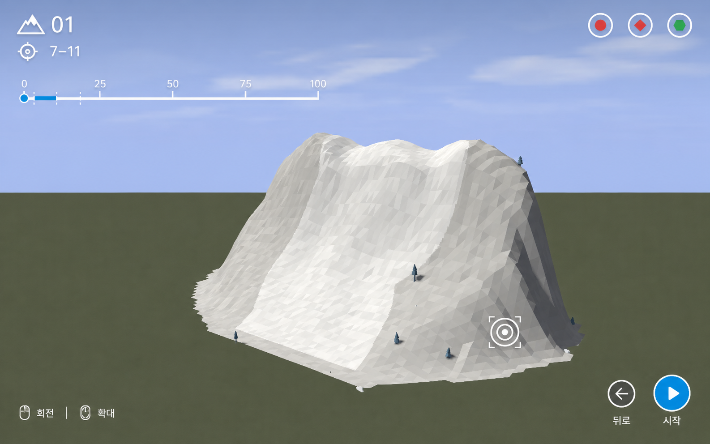
결과
점수 · 기여도 · 다음 행동
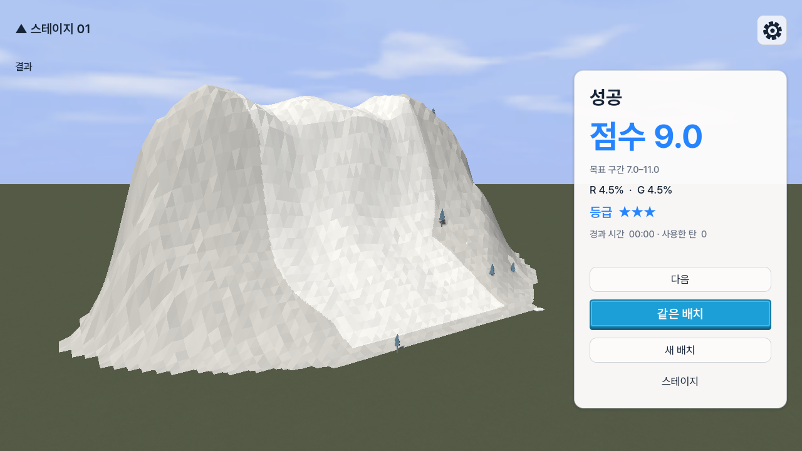
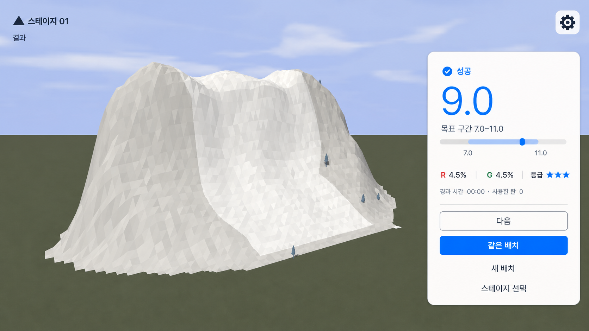
04 · Ownership
화면은 구조용 Godot Container와 아래 공유 컴포넌트만 조합한다. 화면별 색·글꼴·StyleBox·아이콘 복사는 금지한다.
| 공유 컴포넌트 | 역할 | 통합 대상 |
|---|---|---|
| ScoreScale | 0–100 고정 · 조준 수직 / 브리핑·결과 가로 preset | target_band_meter + coverage_meter |
| MetricReadout | 아이콘 + 값 + 짧은 단위 | hud_metric |
| BallQueue | 색 + 형태 토큰 · hover/focus/press 설명 | queue_rail + queue_token_view |
| ValueStepper | 아이콘 · 감소 · 값 · 증가 | aim_controls |
| ActionControl | 주요/보조/조용한 행동 | action_buttons |
| StageRail | 선택 · 완료 · 잠금 노드 | stage_card_button 대체 |
| ContextHints | 최대 3개 아이콘+행동 | context_legend |
| ResultSummary | 점수 + ScoreScale + 행동 | result_panel 대체 |
| ContrastScrim | 경계 없는 대비 보강 | 화면별 패널 대체 |
05 · All 30
1–6은 목표 구간과 공 큐, 7–30은 커버리지와 메커니즘 값을 공급한다. 두 계열 모두 같은 ScoreScale과 공유 HUD를 사용하며 스테이지 데이터는 레이아웃을 소유하지 않는다.